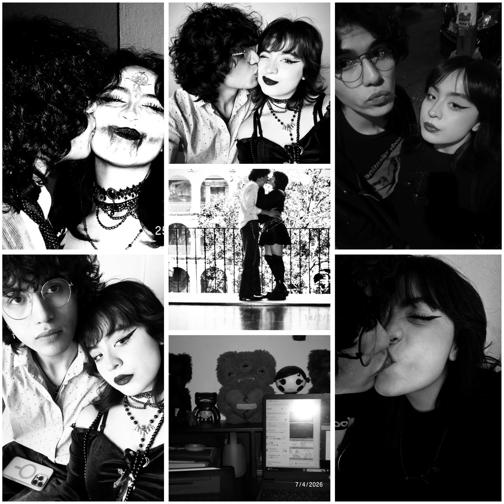

Jimena preciosa hermosa, espero que estes bien dentro de lo que cabe, se que estos momentos han sido bastante difíciles sobre todo por la situación actual. Primero quiero agradecerte por todo el tiempo que hemos estado, estos casi 3 años que hemos estado compartiendo nuestras vidas, he aprendido muchas cosas buenas. LLegué contigo totalmente diferente a como soy ahora, quiero decirte que gracias a ti he aprendido mucho sobre la vida y he cambiado para bien. No tengo palabras para describir todo lo bonito que ha sido este tiempo como novios, aprecio mucho en conocerte y enviarte ese mensaje la primera vez que vi tu perfil en instagram.
Quiero dejarte en claro que me duele mucho esta decisión que tomé pero quiero que ambos estememos bien, tanto tu y yo merecemos estar bien, sobre todo no quiero que esta situación mía llegue tan lejos en nuestra convivencia, relación (en general todo) y la perjudique al punto que se vuelva algo tóxico. Primero que nada quiero hacerte saber que tu eres una persona muy importante en mi vida, eres de las personas más importantes que he conocido en toda mi vida, todo el amor que me has dado lo he apreciado demasiado, siempre amaré tu forma de apoyarme en todo, amarme como soy, comprenderme como soy y en general todo. Se que es muy difícil estar despidiendome y que mayormente toda esta situación ha sido bastante complicada para los dos, por x o y razón, pero quiero dejarte varias cosas en claro.
Quiero empezar esto diciendo que te amo demasiado, que genuinamente eres la persona a la que más amor en este mundo, quiero que tengas ese amor presente para siempre, todo lo que he sentido y todo lo que te he dicho permanecerán para siempre. Quiero dejarte bien en claro que esta decisión nunca fué porque el amor se acabó o algo parecido, PARA NADA ES ASÍ, se que a lo largo de la relación hemos tenido situaciones complicadas, pero nunca he dudado mi amor hacia ti, siempre he querido formr parte de tu vida y sobre todo apoyarte y estar para ti. NUNCA PIENSES LO CONTRARIO POR FAVOR, siempre voy a estar para apoyarte.
Esta decisión como bien ya hab;iamos hablado, me duele bastante y me cuesta trabajo asimilarlo, quiero también dejar en claro que no lo hago porque ya no te amo o cosas similares, PARA NADA ES POR esto esta decisión la tomo porque quiero que tanto tu y yo estemos bien, claramente al principio nos va a doler demasiado y a lo largo del tiempo también :c pero quiero dejar en claro que esta decisión la tomé por el bien de los dos. Este sentimiento de agotamiento en las discusiones, no se debe a falta de amor o desinteres, etc, etc, se debe a lo que ya había comentado que me cuesta demasiado tomar críticas de buena manera, tomar las cosas personales, entre las demas cosas que te había comentado. QUiero dejar esto en claro porque estas situaciones llegaron a un punto que genuinamnete era dañino para mi y también no quería que a medida de descuidar estas situaciones ese dolor llegara hacia ti.
Por último quiero volver a repetirte que eres la persona que siempre voya amar, apoyar, adnmirar, entre otros miles de palabras hermosas, tu llegaste a mi vida y me cambiaste para ser un hombre de bien, contigo he aprendido infinidades de cosas sobre mi mismo, en como ser mejor persona y también como no, nos la pasabamos muy ien cuando salíamos, estabamos juntos y convivíamos en general, estos momentos que te ando diciendo siempre permaneceran en mi corazón y espero que en el tuyo asi sea de igual modo. Estos casi 3 años agradezco a la vida de poder vivirlos a tu lado, porque de vdd que me cambiaste la vida para bien y espero yo también haberlo hecho contigo. No sabes lo mucho que te amo y cuanto te seguiré amando y apreciendo. Cundo te sientas mal, quiero que veas todos esos momentos bonitos que hemos tenido en la página web que te hice, aqui te voy a dejar link, pero quiero que recuerdes eso y sobre todo que haya hecho un cambio positivo en tu vida así como tu lo hiciste en la mía. Siempre voy a apreciar en mi corazón todos esos momentos de apoyo que me diste en momentos difíciles y sobre todo que en esta semana también lo has hecho, es demasiado importante y valioso todo eso que has hecho por mi, sobre todo cuando me has escuchado y me has entendido. Jimena Gomez Perez Gracias por pasar estos casi 3 años conmigo, me duele mucho decir adios pero la vdd no creo que no pueda decirte adios para siempre, quiero seguir a tu lado y como te había dicho antes, no me cierro volver en el futuro. Te amo y gracias por compartir tu vida a mi lado, siempre seras el amor de mi vida Te quiere: Carlos Sebastian Aguilar Corona <3
link: https://carlosaguilarwav.github.io/NuestroAniversario2024/
